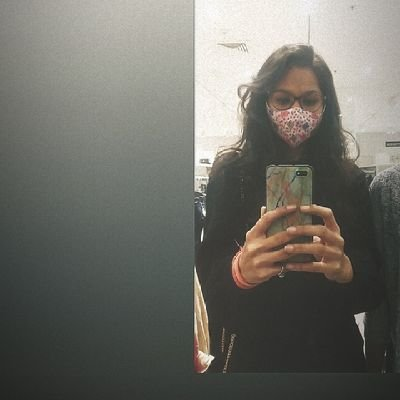

- Home
- Explore
- Notification
- Message
- Bookmark
- Lists
- Profle
- More
Tweet
Pritam Kumar
@Pritamkr_
- Tweet
Pratham👨💻🚀 @Prathakum 4h
40K is now on the verge
And it happened in less than 10 months🤩

Sakshi Gupta @Sakshi_0612 8m
The kind of content you make, this no. is less for it. You deserve more and more🔥✨
Pratham👨💻🚀 @Prathakum 4h
I appreciate it. Thanks, Sakshi🤩
Sanskritiguptaa @ctrlplussend Mar 6
Hey everyone, I've been thinking of writing a blog for quite sometime,& I finally wrote it! Thank you @hashnode for such a great platform to publish our blogs! It's my very first blog so I hope some of these advices actually help some people out there Smiling face with open mouth and smiling eyes

What's happening
Covid-19-Live

Covid-19 in India
#OnePlusXHasselblad
Discover the #OnePlus9Series, co-developed with Hasselblad | March 23
Promoted by OnePlus India
Discover the #OnePlus9Series, co-developed with Hasselblad | March 23
Promoted by OnePlus India
Trending in India
Convert
1,214 Tweets
Trending in India
Lockdown
9,214 TweetsLos Angeles Times
Oprah gives clarification from Harry about Archie skin color comments